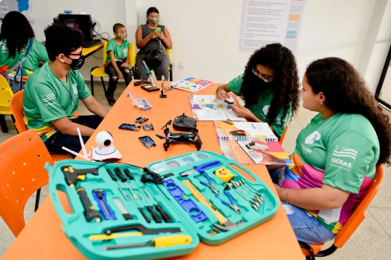
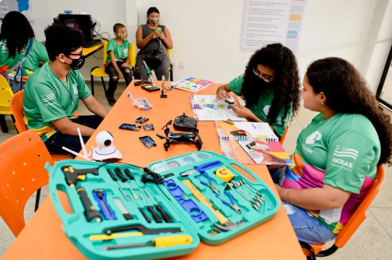

Projeto Luz do Amanhã
Iniciativa voltada à educação de jovens em situação de vulnerabilidade social, oferecendo oficinas e cursos gratuitos.
Iniciativa voltada à educação de jovens em situação de vulnerabilidade social, oferecendo oficinas e cursos gratuitos.
Focado na preservação ambiental, o projeto realiza plantios comunitários e campanhas de reciclagem.

Você pode participar como voluntário ou fazer uma doação para apoiar nossos projetos.